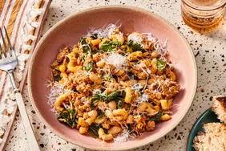

Recepie for Homemade Pasta
Today you will learn how to make Pasta from scratch

Description
Homemade Pasta is a delicious Italian dish
that is typically served with sauce and meat
use.
Ingredients
- 4 tablespoons vegetable oil, divided
- small potatoes, peeled and halved
- 2 large onions, finely chopped
- 2 cloves garlic, minced
- tablespoon minced fresh ginger root
Steps to Follow
- Gather all Ingredients
- Heat 2 tablespoons of oil in a large skillet. Fry potatoes in hot
oil until lightly browned, about 3 to 5 minutes
- Add remaining 2 tablespoons of oil to the skillet. Add onions,
garlic, and fresh ginger;
- Add remaining 2 tablespoons of oil to the skillet.
Add onions, garlic, and fresh ginger;